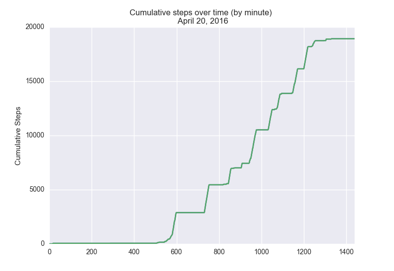

An interesting phenomenon that has appeared in recent years is the notion of “Quantified Self” - simply the idea that quantifying much of our daily activity can lead to insights about our behaviors, and that a more thorough knowledge of our own behavior can help us to be more mindful of our health and lifestyle choices. In a previous post, I explored (in a very rudimentary fashion) information about my genome, in the form of single nucleotide polymorphisms sequenced by 23andMe™. More recently, I’ve had some success in extracting data on my daily activity, as recorded by my Fitbit Charge™.
Actually extracting informative data from Fitbit turned out to be the hardest part of the analysis I’ll talk about here…later on, I plan to take a more thorough look at the data and conduct a thorough statistical analysis.
Fitbit data can be downloaded from the standard web interface, but to get fine resolution data (on the level of minutes), you have to go through the Fitbit developer API. To do this, you have to register an app with Fitbit, selecting the “personal” option under uses (to get fine resolution data under other settings, you need to contact Fitbit and obtain access to Fitbit’s “Partner API”). After registering an app, you can then begin the process of accessing data through the API using a variety of different tools – I chose to go with a python implementation.
The python-fitbit tool contains a script (namely, gather_keys_oauth2.py) to
obtain the “access token” and “refresh token” generated by the Fitbit API (in
my eyes, this is the trickiest part). To do this, the personal key and
personal secret assigned to your Fitbit app are necessary (these are displayed
on the app page). After obtaining these keys, data can be downloaded in any
format you would like; I found JSON to be most convenient for my purposes. To
proceed with my elementary analysis, I used the python-fitbit tool to download
my activity data from yesterday (April 20th).
After extracting my activity data for a single day, I merely loaded the
resultant JSON file into python using the json module, isolated only the
activity data via taking subsets (the JSON file created by Fitbit is actually a
bit complicated, and organized slightly unintuitively), and passed the activity
list structure to a pandas dataframe.
I then proceeded to plot the cumulative distribution function (CDF) of my steps (as measured minute-by-minute) over the past day. The plot is what the CDF looked like:

I found the CDF of my steps over a single day to be a convenient and informative visualization – just by looking at horizontal regions, you can clearly see all the points in time where I was sitting rather still, probably working on some other data analytic or statistical project (like this one!).
This small amount of analysis – from figuring out the data extraction process to producing the plot above – took roughly 2-3 hours, most of which consisted of struggling with API access issues and re-orienting myself to the use of Python for data analysis (currently, I mostly use R for my biostatistical work).
All of the scripts that I produced are available on GitHub here. I plan to add more thorough analyses to this repo over the next few weeks, assuming I don’t get distracted by other ongoing work/projects…
Anyway, to any readers (I guess myself in the future at least?), cheers for now – I don’t think I discussed nearly everything that I set out to talk about, but hopefully there will be a follow-up post soon enough.
Share this post
Twitter
Google+
Facebook
Reddit
LinkedIn
StumbleUpon
Email